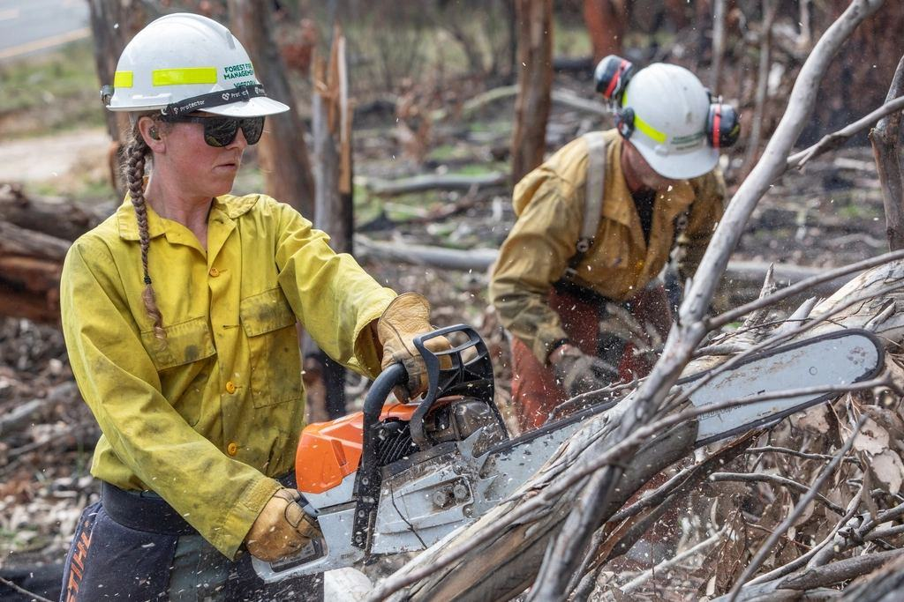
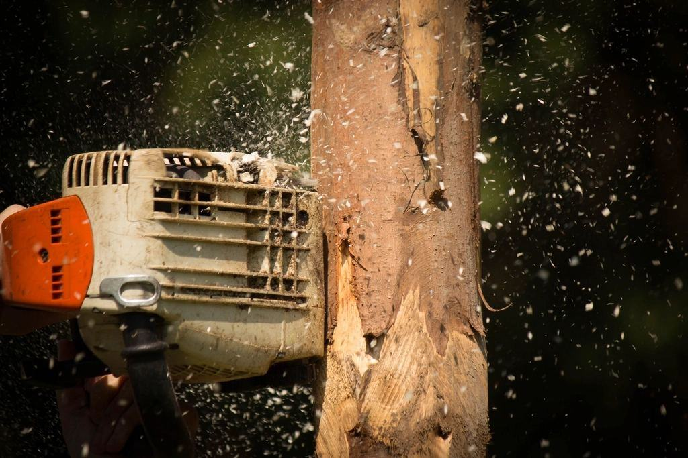
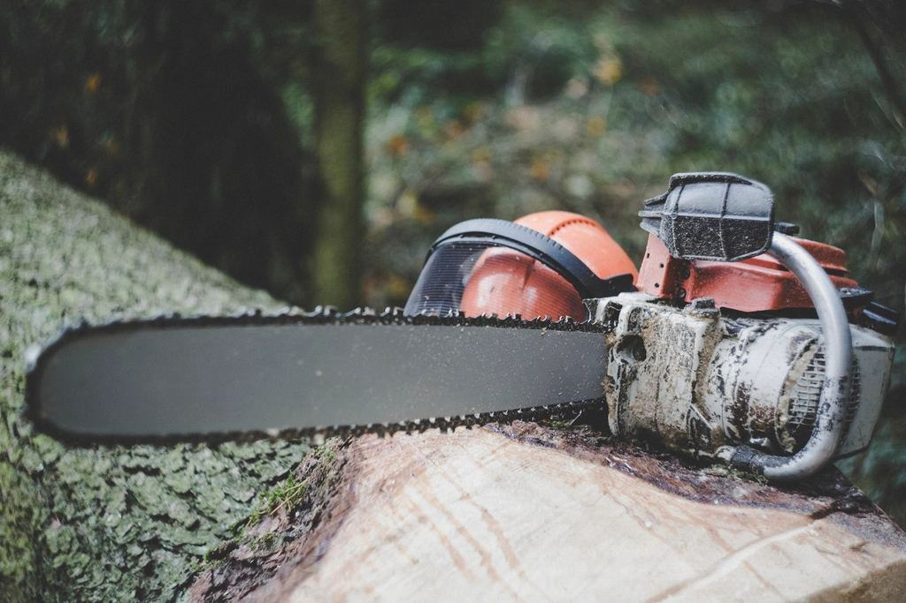
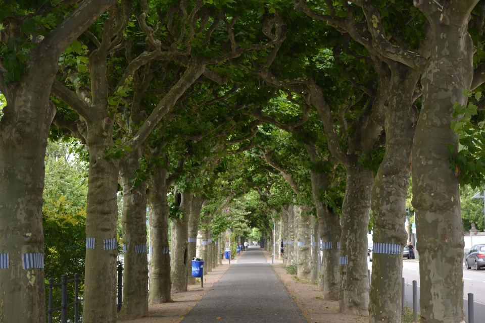
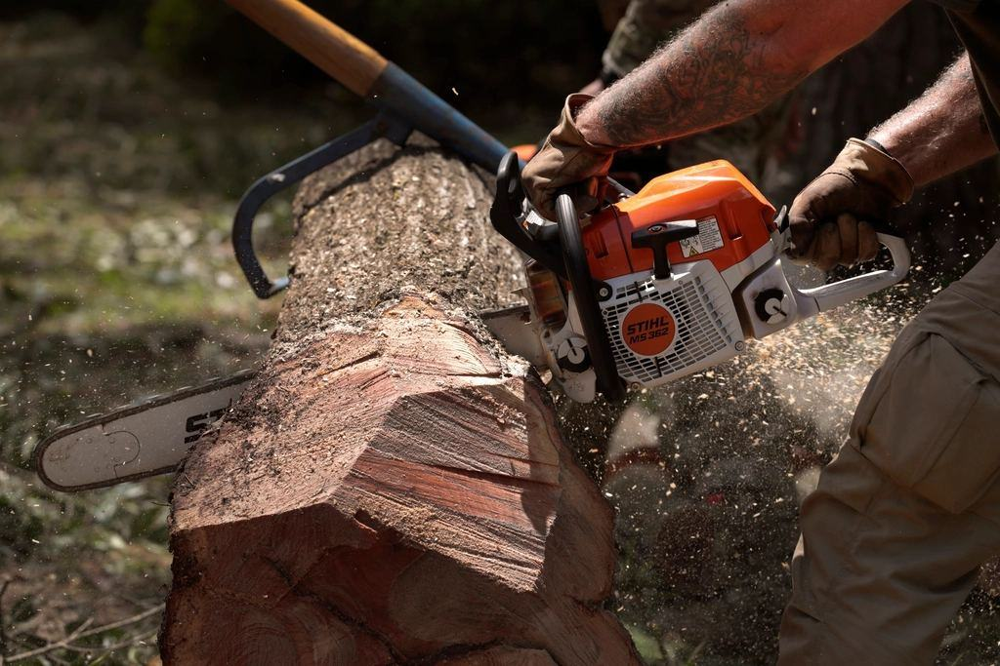
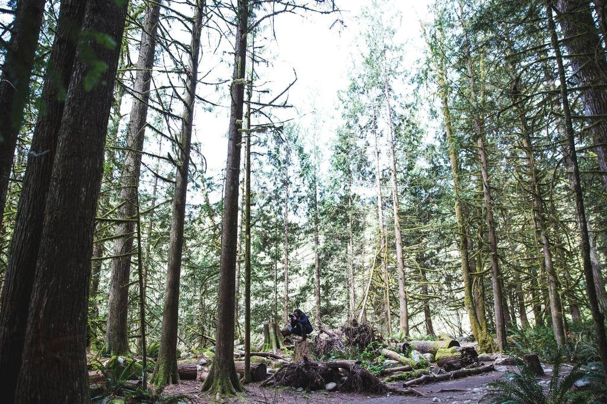

Vad vill du veta om trädet?
Trädbesiktning (VTA)
Visuell bedömning av stam, krona och rotzon enligt VTA-metoden.
Läs merLjudtomografi
En bild av stammens insida som visar hur stor del som är rötad.
Läs merDragprov
Vi mäter hur trädet rör sig vid belastning och räknar ut vindsäkerheten.
Läs merKronstabilisering
Dynamiska stag som minskar risken att tvåstammiga träd spricker.
Läs merBeskärning och fällning
Vi utför åtgärderna i protokollet själva, med fast pris.
Läs merKyrkogårdar och skolor
Återkommande besiktning av träd där många människor rör sig.
Läs merPriser
Fasta priser per träd för besiktning och mätning.
Läs merBeställ besiktning
Svar inom två arbetsdagar och besök inom två veckor.
Läs mer
Kvalificerade att bedöma risk
 01
01ISA Certified Arborist
Johan och Karolina är ISA-certifierade, Johan även som ISA Tree Risk Assessment Qualified.

02European Tree Worker
Alla som utför åtgärder är ETW-certifierade eller under certifiering.
 03
03Utbildad i tomografi
Instrumentleverantörens certifierade utbildning i ljudtomografi och dragprov.
 04
04Konsult- och ansvarsförsäkring
Försäkring för både rådgivning och utfört arbete, upp till 10 Mkr.
Lär dig läsa träd inifrån
Vi söker en arborist som vill specialisera sig på besiktning. Du får gå bredvid Johan i ett år, och vi betalar ISA-certifiering och kurs i tomografi.
Varje protokoll läses av två personer innan det skickas, och ingen bedömning ändras för att beställaren hoppas på ett annat svar.
- Falun
 Arborist med inriktning besiktningLäs mer och ansök
Arborist med inriktning besiktningLäs mer och ansök - Borlänge

Klättrande arborist, åtgärdslagetLäs mer och ansök
Illustrationsbilder
- Galleri
Instrument, kronor och protokoll
Dra för fler Alla uppdrag8 bilder · Illustrationsbilder 
01Motorsåg i arbete 
02Träd i park 
03Trädgård 
04Stubbe 
05Skogsarbete 
06Trädstam 
07Häckklippning 
08Ved och stockar
- Illustrationsbild
 Kronkoll i siffror
Kronkoll i siffrorVarje bedömning bygger på mätvärden
- 014 000+trädMätta med tomograf
- 02
 1 av 3Misstänkta riskträd kan stå kvar
1 av 3Misstänkta riskträd kan stå kvar - 037anställdaBesiktning och åtgärd
- 0448 hAkut bedömning vid fara
Kronkoll startades 2017 av Johan Ersson, som arbetat sju år som arborist i Falu kommun och tröttnat på att se friska träd fällas för att ingen visste hur de mådde inuti. Han köpte en ljudtomograf och en resistograf, och i dag är vi sju anställda med kontor vid Stora torget i Falun.
Alla nyckeltal


Det är lätt att fälla ett träd för säkerhets skull. Det svåra är att veta när man inte behöver. Det är det vi har instrumenten till.
Uppdrag i närområdet


- Metod & ansvar
Ett mätt träd är ett räddat träd
- Illustrationsbild

När ett träd bedöms på känsla fälls det ofta för säkerhets skull. Våra mätningar gör att fler gamla träd får stå kvar, samtidigt som de som verkligen är farliga tas bort i tid.
Så arbetar vi säkert- 1 av 3riskträd räddade genom mätning
- 10 dagartill färdigt protokoll
- 0olyckor med träd som vi har godkänt
Pris per träd och mätmetod
Besiktning villatomt
VTA-bedömning med skriftligt protokoll.
2 400 krupp till 3 träd- Besök med certifierad arborist
- Riskklass och åtgärd per träd
- Protokoll med foto inom tio dagar
- Avräknas vid åtgärd hos oss
- Vanligast
Besiktning med tomografi
När du behöver veta hur rötat trädet är.
5 900 krförsta trädet- VTA plus ljudtomografi
- Tvärsnittsbild av stammen
- Beräkning av kvarvarande hållfasthet
- Genomgång av resultatet på plats
Kronstabilisering
Dynamiskt stag som avlastar tvåstammiga träd.
fr. 4 800 krper stag inkl. montage- Stag dimensionerat efter trädet
- Montage med klättring
- Lätt beskärning vid behov
- Kontroll efter två år
Priser inklusive moms. Besiktning ger inte RUT-avdrag, åtgärder på villatomt gör det.
Beställ en trädbesiktning
Berätta hur många träd det gäller, var de står och vad som oroar dig.
- Telefon
- 070-174 06 93
- E-post
- besiktning@kronkoll.se
- Öppettider
- Mån–fre 8–16.30